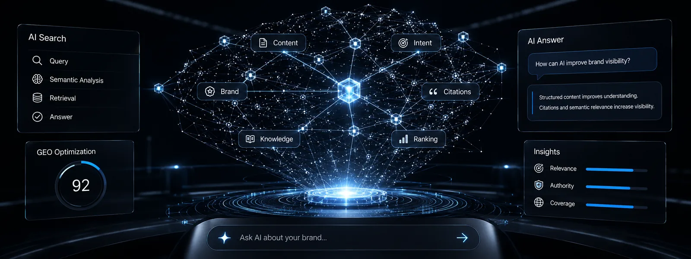

AI Search Visibility
AI搜索语义网络与品牌可见度
结构化内容、可信引用和语义相关性共同影响品牌进入AI答案的机会。
让企业真实信息被AI稳定读取、准确理解，并在相关答案中获得合理的推荐机会。
零雪AI是一家专注生成式引擎优化（GEO）与AI营销的智能服务平台，提供品牌AI可见度诊断、内容结构化、信源建设、效果监测和GEO实战培训。
2026年的用户决策入口分散在传统搜索、AI问答、短视频与内容社区。部分用户会直接询问“这个行业怎么选”“产品有什么限制”“服务是否适合我”，企业官网因此既要服务真人阅读，也要让检索与问答系统能准确定位事实。
GEO首先回答三个问题：公开页面能否被稳定读取，系统能否准确区分品牌与服务，答案中的结论是否有可核验来源。
当官网、公开账号与第三方资料的名称、参数、服务边界或联系方式不一致时，AI答案可能遗漏品牌、混淆主体或引用旧信息。问题通常不只在文章数量，而在抓取链路、事实口径、问句覆盖与证据关系没有形成闭环。
GEO要做的是把真实品牌事实整理成可抓取、可理解、可核验的内容资产，并用固定问句持续复测。技术修复和内容建设可以长期复用，但平台能力、产品信息与竞争环境会变化，因此仍需按更新事件和复核周期维护。
P.R.I.M.E是一套从诊断到监测的完整引擎，每一步既可独立解决一个具体痛点，串联起来就是品牌在AI生态中的系统性建设方案。如果说传统SEO争夺的是网页排名，那GEO重构的是品牌在AI认知图谱中的位置。
| 步骤 | 对应模块 | 核心问题 | 核心内容 |
|---|---|---|---|
| P | Perception 感知诊断 —— 灯塔 | 品牌在AI的心智地图上到底在哪里？ | 在主流大模型平台上，用跟业务相关的各类问句进行地毯式检索。只看四个硬指标：品牌出现率、描述准确率、竞品占位率、信源健康度。诊断结果往往比预想的更残酷——多数未做GEO的品牌，核心品类词的AI出现率趋近于零。只有看清真实战况，后续的仗才知道往哪儿打。底层引擎：SGFE的S⁴ + T³ |
| R | Refinement 内容结构化重建 —— 蓝图 | 怎么让AI读得懂你的内容、愿意引用你的内容？ | 将品牌资料整理为定义、参数、适用条件、问答和来源关系；用SSA检查标题与结构，用IDO检查每项判断是否有可核验信息，用MSCG记录多页面事实差异与修订责任。同步周期由业务变化决定，不假设平台固定权重，也不以文章数量替代内容质量。底层工具：SGFE的V.Link + C.R.O.S.S |
| I | Integrity 信任锚定 —— 锚点 | AI凭什么把你视为权威信源？ | 信任锚定以来源可追溯为原则：关键事实优先指向企业原始资料，外部判断链接到独立公开来源，并标注来源主体、适用范围和更新时间。结构化数据只表达可见正文中的作者、组织、日期与引用关系；来源数量不是固定门槛，质量和对应关系需要逐项核验。底层工具：SGFE的V.Link + C.R.O.S.S |
| M | Multiply 分发导航 —— 罗盘 | 一份好内容写出来，怎么让它的势能最大化？ | 按照用户场景、内容格式和更新频率制定发布计划：官网保存权威事实，其他渠道围绕同一事实回答不同问句，并保留原始链接和修订记录。平台差异通过固定问句测试调整，不把首发、发布时间间隔或内容格式写成永久加权、降权规则。底层工具：SGFE的C.R.O.S.S + V.Link |
| E | Evaluation 效果监测 —— 雷达 | GEO不是"一锤子买卖"，效果必须持续追踪 | 建立L1-L4监测框架：L1记录可见度，L2核对事实准确度，L3比较同题答案中的竞争语境，L4连接线索与业务结果。前三项是过程指标，转化是业务指标；只有固定问句、测试日期、来源截图、纠错记录和产品更新保持一致，数据才具有可比性。底层工具：SGFE的Q-Factor + T³ |
P.R.I.M.E用于组织工作步骤，SGFE用于记录问句、页面、实体和来源之间的关系。它不是平台算法或固定权重公式，而是一套内部内容治理工具：把品牌事实、用户问题、证据与更新责任连接起来，便于发布前检查和发布后复测。
| 组件名称 | 核心作用 | 技术要点 |
|---|---|---|
| S⁴ 语义源点定位播种 | 品牌内容到底该往哪儿发力？ | 选取覆盖品牌、品类、比较、场景和决策的固定问句，记录每次测试的平台、日期、答案、来源链接和事实错误；再按问题主题、对应页面和证据缺口分类，形成可复核的内容优先级清单。 |
| C.R.O.S.S 跨平台语义共振 | 怎么让AI觉得"业界都在关注这个品牌"？ | 先建立统一的品牌事实表，再将同一事实映射到官网页面、公开账号和第三方来源。不同渠道可以采用不同表达，但名称、参数、服务边界和原始链接应保持一致；差异由负责人记录、复核和修订。 |
| T³ 三维语义网构建 | 品牌内容覆盖了AI评估的所有维度吗？ | 按来源质量、问题相关性和信息日期检查内容覆盖：定义页说明概念，服务页明确边界，文章回答具体问句，更新记录标注时效。这个三维表用于发现空白和冲突，不代表任何平台公开的排序公式。 |
| Q-Factor 内容质量预检 | 内容发布前，怎样检查可读性与证据完整性？ | 发布前检查标题是否对应真实问句、首段是否给出直接答案、关键判断是否有来源、表格是否可在移动端阅读、Schema是否与正文一致、更新时间是否真实。发布后使用同一问句复测，并根据事实错误和来源变化修订页面。 |
| V.Link 信任梯级传导 | 品牌自己说"我很专业"，AI不信怎么办？ | 为关键判断保存原始资料、独立公开来源和本站解释页之间的链接关系，标注引用主体、适用范围、发布日期和访问日期。V.Link用于发现断链、过期来源和二次转述，不把外部链接数量等同于可信度。 |
广告投放与GEO承担不同任务：广告用于购买确定时段的曝光，GEO用于建设可重复使用的官网事实、问答和证据资产。内容可以持续积累价值，但能否被抓取、引用或推荐仍要通过固定问句和真实来源复测。
越早统一品牌事实、页面结构和更新责任，后续新增产品、案例和问答时越容易复用同一套基础。已有内容仍需按实际变化维护；是否获得曝光、引用或业务线索，要分别用固定问句和业务数据验证。
在GEO实战中，用户的AI搜索意图按认知深度分成三层，每层用不同的内容策略去承接：
用户处在概念了解阶段，常问“这是什么”“适用于谁”“有哪些限制”。这类页面应给出清晰定义、适用边界、来源和更新时间，帮助用户与检索系统减少理解歧义。
用户已经明确需求，开始比对方案，问的是"哪个好""怎么选""有什么区别"。这层拼的是偏好建立——通过对比评测、选购框架、标准解析，让品牌在用户做判断时成为关键参考。
用户已经锁定范围，在做最后确认，问的是"靠不靠谱""要多少钱""资质怎么样"。这层拼的是信任转化——资质展示、透明的服务说明、FAQ式信任建设，帮用户迈出最后一步。
用语义标题和内部链接串联定义、方案与决策页面，让用户和抓取系统能沿同一事实链继续阅读；各页面仍要独立回答其核心问题。
GEO不是一套固定流程，面对不同的品牌起点和竞争态势，有五种不同的打法：
| 场景 | 什么时候用 | 怎么做 |
|---|---|---|
| 主动引导 | 品牌在AI中还是一片空白 | 按可抓取、可理解、可核验标准建设结构化内容资产，并保留来源与复测记录 |
| 被动背书 | 已有一定认知基础，需要强化信任 | 系统管理第三方口碑，积累专业评测和行业媒体报道 |
| 场景植入 | 想在用户搜索特定场景时被联想 | 将品牌与具体使用场景深度绑定，持续产出场景化内容 |
| 概念植入 | 想建立行业思想领导力 | 提出创新框架或方法论，通过持续输出占据认知制高点 |
| 舆情矫正 | 出现广泛的误解或偏差信息 | 用权威、正面、事实性的内容密度去平衡AI接触的信息环境 |

扫码添加零雪AI微信
“GEO不是风口，是品牌在AI时代的基本配置。”
AI Platform Topics
以豆包为主，并补齐DeepSeek、腾讯元宝、通义千问、文心一言与Kimi对品牌事实、适用场景和证据链的理解路径。
 豆包 / 字节生态
豆包 / 字节生态
围绕公开网页、场景化问答、品牌事实一致性和来源链接，降低豆包搜索核验品牌信息的成本。
DeepSeek用定义链、证据密度、服务边界和结构化FAQ，让品牌成为可推理、可引用的答案来源。
腾讯元宝统一官网主体、服务边界和联系方式，并用公开来源支持品牌信息的交叉核验。
通义千问通过参数表、对比表、选型问答和更新日期，提升企业信息的检索与核验效率。
文心一言维护可抓取HTML、清晰标题、公开来源和稳定实体口径，减少品牌理解歧义。
Kimi补充长文摘要、研究型问答、来源链接与适用边界，支持复杂问题的交叉核验。